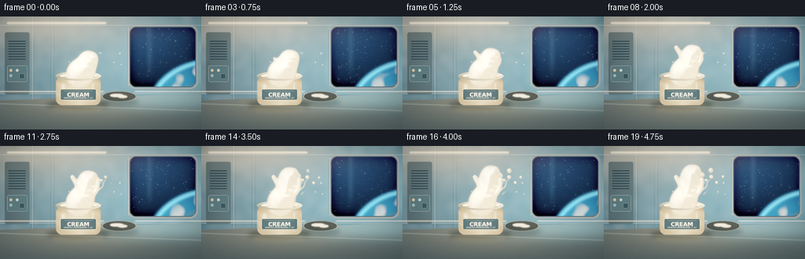
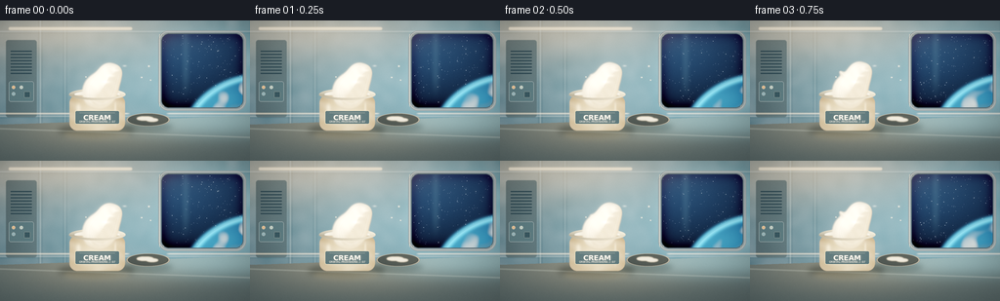

CODING AGENTS AS PIXEL WORLD MODELS
traex/DeepSeek-V4.1-Flash · mechanics_0002
点击播放 · 原生 RGB 像素
逐轮保存的候选
回放视频、检查图与代码变化。
每份候选均可单独播放。实际图片检查记录在下方工具轨迹中。
候选 01播放与检查图
点击播放 · 原生 RGB 像素


展开代码变化
--- 上一保存版本
+++ 本次保存版本
@@ -0,0 +1,592 @@
+"""Procedural render of an opened cream container in a space station.
+
+The scene is rendered at 4x the target resolution and downsampled with
+Lanczos filtering. Everything is deterministic and generated from the text
+prompt in prompt.txt.
+"""
+
+from pathlib import Path
+import json
+import math
+
+import numpy as np
+from PIL import Image, ImageDraw, ImageFont
+from scipy.ndimage import gaussian_filter
+
+import artifact_io
+
+
+CASE_DIR = Path(__file__).resolve().parent
+SPEC = json.loads((CASE_DIR / "task_spec.json").read_text())
+OUT_W = int(SPEC["width"])
+OUT_H = int(SPEC["height"])
+N_FRAMES = int(SPEC["frames"])
+W, H = 1024, 576
+RNG = np.random.default_rng(1729)
+
+YY, XX = np.mgrid[0:H, 0:W].astype(np.float32)
+
+
+def smoothstep(edge0, edge1, value):
+ t = np.clip((value - edge0) / (edge1 - edge0), 0.0, 1.0)
+ return t * t * (3.0 - 2.0 * t)
+
+
+def mix(a, b, t):
+ a = np.asarray(a, dtype=np.float32)
+ b = np.asarray(b, dtype=np.float32)
+ if a.ndim == 1 and b.ndim == 1:
+ a = a[None, None, :]
+ b = b[None, None, :]
+ t = np.asarray(t, dtype=np.float32)
+ while t.ndim < max(a.ndim, b.ndim):
+ t = t[..., None]
+ return a + (b - a) * t
+
+
+def composite(base, color, alpha):
+ alpha = np.clip(alpha, 0.0, 1.0)
+ if alpha.ndim == 2:
+ alpha = alpha[..., None]
+ return base * (1.0 - alpha) + np.asarray(color, dtype=np.float32) * alpha
+
+
+def rounded_mask(box, radius, feather=1.0):
+ mask = Image.new("L", (W, H), 0)
+ draw = ImageDraw.Draw(mask)
+ draw.rounded_rectangle(box, radius=radius, fill=255)
+ arr = np.asarray(mask, dtype=np.float32) / 255.0
+ if feather:
+ arr = gaussian_filter(arr, feather)
+ return arr
+
+
+def polygon_mask(points, feather=0.0):
+ mask = Image.new("L", (W, H), 0)
+ ImageDraw.Draw(mask).polygon(points, fill=255)
+ arr = np.asarray(mask, dtype=np.float32) / 255.0
+ if feather:
+ arr = gaussian_filter(arr, feather)
+ return arr
+
+
+def ellipse_mask(cx, cy, rx, ry, feather=1.0):
+ mask = Image.new("L", (W, H), 0)
+ ImageDraw.Draw(mask).ellipse((cx - rx, cy - ry, cx + rx, cy + ry), fill=255)
+ arr = np.asarray(mask, dtype=np.float32) / 255.0
+ if feather:
+ arr = gaussian_filter(arr, feather)
+ return arr
+
+
+def add_glow(base, cx, cy, sx, sy, color, strength):
+ field = np.exp(-0.5 * (((XX - cx) / sx) ** 2 + ((YY - cy) / sy) ** 2))
+ return base + field[..., None] * np.asarray(color, dtype=np.float32) * strength
+
+
+def radial_light(cx, cy, sx, sy):
+ return np.exp(-0.5 * (((XX - cx) / sx) ** 2 + ((YY - cy) / sy) ** 2))
+
+
+def make_background():
+ """Station wall, a large observation window, and a reflective worktop."""
+ y = YY / H
+ x = XX / W
+ base = np.empty((H, W, 3), dtype=np.float32)
+ base[..., 0] = 0.043 + 0.030 * (1.0 - x) + 0.012 * y
+ base[..., 1] = 0.073 + 0.044 * (1.0 - x) + 0.012 * y
+ base[..., 2] = 0.085 + 0.052 * (1.0 - x) + 0.020 * y
+
+ # Broad, soft wall illumination from the window and ceiling strip.
+ base = add_glow(base, 785, 220, 410, 260, (0.12, 0.24, 0.29), 0.65)
+ base = add_glow(base, 255, 40, 390, 110, (0.24, 0.18, 0.10), 0.50)
+ base = add_glow(base, 470, 330, 340, 230, (0.10, 0.12, 0.09), 0.28)
+
+ # Very low-frequency panel texture.
+ texture = gaussian_filter(RNG.normal(0, 1, (H, W)).astype(np.float32), 18)
+ texture /= max(float(np.std(texture)), 1e-6)
+ base += texture[..., None] * 0.007
+
+ # Window opening and space view.
+ win = rounded_mask((656, 49, 1000, 363), 35, 1.1)
+ inside_x = (XX - 656) / 344.0
+ inside_y = (YY - 49) / 314.0
+ space = np.zeros((H, W, 3), dtype=np.float32)
+ space[..., 0] = 0.006 + 0.008 * (1.0 - inside_y)
+ space[..., 1] = 0.014 + 0.020 * (1.0 - inside_y)
+ space[..., 2] = 0.030 + 0.042 * (1.0 - inside_y)
+
+ # Sparse, layered stars.
+ star_layer = np.zeros((H, W), dtype=np.float32)
+ for _ in range(150):
+ sx = int(RNG.integers(667, 990))
+ sy = int(RNG.integers(62, 344))
+ if RNG.random() < 0.80:
+ star_layer[sy, sx] = RNG.uniform(0.35, 0.95)
+ else:
+ star_layer[sy:sy + 2, sx:sx + 2] = RNG.uniform(0.45, 1.0)
+ stars = gaussian_filter(star_layer, 0.42)
+ space += stars[..., None] * np.array([0.64, 0.78, 1.0], dtype=np.float32) * 1.6
+
+ # Earth limb fills the lower-right of the window.
+ earth_cx, earth_cy = 1072.0, 502.0
+ earth_rx, earth_ry = 318.0, 272.0
+ q = ((XX - earth_cx) / earth_rx) ** 2 + ((YY - earth_cy) / earth_ry) ** 2
+ earth = smoothstep(1.004, 0.988, q)
+ horizon_glow = np.exp(-0.5 * ((np.sqrt(np.maximum(q, 1e-6)) - 1.0) / 0.028) ** 2)
+ horizon_glow *= (YY < 390)
+
+ cloud_noise = gaussian_filter(RNG.normal(0, 1, (H, W)).astype(np.float32), 18)
+ cloud_noise /= max(float(np.std(cloud_noise)), 1e-6)
+ cloud_bands = (
+ np.sin(XX * 0.019 + YY * 0.028)
+ + 0.62 * np.sin(XX * 0.047 - YY * 0.013 + 1.3)
+ + 0.34 * cloud_noise
+ )
+ clouds = smoothstep(0.60, 1.55, cloud_bands) * smoothstep(1.00, 0.55, q)
+ ocean = np.empty((H, W, 3), dtype=np.float32)
+ ocean[..., 0] = 0.018
+ ocean[..., 1] = 0.095
+ ocean[..., 2] = 0.205
+ ocean = add_glow(ocean, 850, 365, 150, 80, (0.05, 0.20, 0.26), 0.75)
+ ocean = composite(ocean, (0.72, 0.78, 0.72), clouds * 0.66)
+ land_haze = smoothstep(0.15, 0.85, np.sin(XX * 0.014 + YY * 0.036) + cloud_noise * 0.28)
+ ocean = composite(ocean, (0.20, 0.25, 0.16), land_haze * 0.18 * earth)
+ space = composite(space, ocean, earth)
+ space += horizon_glow[..., None] * np.array([0.15, 0.54, 0.82], dtype=np.float32) * 0.86
+ space = add_glow(space, 733, 118, 150, 120, (0.06, 0.14, 0.23), 0.25)
+ base = composite(base, space, win)
+
+ # Glass reflections and a soft blue spill around the window.
+ glass_band = smoothstep(0.23, 0.31, inside_x) * smoothstep(0.38, 0.29, inside_x)
+ glass_band *= smoothstep(0.90, 0.52, inside_y)
+ base += (glass_band * win * 0.032)[..., None] * np.array([0.42, 0.72, 0.84], dtype=np.float32)
+ spill = gaussian_filter(win, 28) - gaussian_filter(win, 7)
+ base += spill[..., None] * np.array([0.025, 0.085, 0.105], dtype=np.float32)
+
+ # Window frame: layered rounded rectangles read clearly after downsampling.
+ frame = Image.new("RGBA", (W, H), (0, 0, 0, 0))
+ fd = ImageDraw.Draw(frame)
+ fd.rounded_rectangle((648, 41, 1008, 371), radius=41, outline=(47, 58, 61, 255), width=13)
+ fd.rounded_rectangle((652, 45, 1004, 367), radius=38, outline=(105, 111, 105, 255), width=2)
+ fd.rounded_rectangle((660, 53, 996, 359), radius=32, outline=(16, 23, 27, 255), width=3)
+ fd.line((653, 56, 653, 353), fill=(168, 151, 113, 255), width=2)
+ fd.line((1003, 78, 1003, 337), fill=(76, 91, 94, 255), width=2)
+ frame_arr = np.asarray(frame, dtype=np.float32) / 255.0
+ base = composite(base, frame_arr[..., :3], frame_arr[..., 3])
+
+ # Wall panel seams and structural ribs.
+ for px, strength in [(165, 0.55), (266, 0.28), (1032, 0.38)]:
+ distance = np.abs(XX - px)
+ line = np.exp(-0.5 * (distance / 2.4) ** 2) * (YY < 430)
+ shadow = np.exp(-0.5 * ((distance - 6) / 3.0) ** 2) * (YY < 430)
+ base += line[..., None] * np.array([0.10, 0.11, 0.10], dtype=np.float32) * strength
+ base -= shadow[..., None] * np.array([0.018, 0.024, 0.025], dtype=np.float32)
+
+ for py in [45, 393]:
+ line = np.exp(-0.5 * ((YY - py) / 2.2) ** 2)
+ base += line[..., None] * np.array([0.075, 0.083, 0.078], dtype=np.float32)
+ base -= np.exp(-0.5 * ((YY - py - 5) / 2.7) ** 2)[..., None] * 0.018
+
+ # Ceiling light bar with a restrained warm glow.
+ light = rounded_mask((36, 28, 540, 38), 5, 2.0)
+ base = composite(base, (0.96, 0.80, 0.55), light * 0.72)
+ base = add_glow(base, 280, 40, 230, 52, (0.20, 0.13, 0.065), 0.60)
+
+ # Left-side locker face: quiet utilitarian detail.
+ locker = rounded_mask((24, 80, 150, 397), 10, 1.2)
+ locker_color = np.empty((H, W, 3), dtype=np.float32)
+ locker_color[..., 0] = 0.060
+ locker_color[..., 1] = 0.084
+ locker_color[..., 2] = 0.090
+ locker_color += np.clip((XX - 25) / 125, 0, 1)[..., None] * np.array([0.015, 0.022, 0.023])
+ base = composite(base, locker_color, locker * 0.82)
+ vent = Image.new("RGBA", (W, H), (0, 0, 0, 0))
+ vd = ImageDraw.Draw(vent)
+ for yy in range(124, 225, 13):
+ vd.rounded_rectangle((43, yy, 130, yy + 4), radius=2, fill=(7, 13, 16, 230))
+ vd.rounded_rectangle((36, 250, 138, 333), radius=8, fill=(19, 31, 34, 230), outline=(61, 75, 76, 220), width=2)
+ for i, (bx, by, col) in enumerate([
+ (55, 274, (173, 86, 44)),
+ (87, 274, (93, 117, 99)),
+ (55, 301, (48, 76, 83)),
+ ]):
+ vd.ellipse((bx - 7, by - 7, bx + 7, by + 7), fill=(*col, 245), outline=(128, 130, 109, 255), width=1)
+ vd.rounded_rectangle((99, 292, 123, 316), radius=3, fill=(9, 17, 20, 235), outline=(92, 94, 78, 220), width=1)
+ vent_arr = np.asarray(vent, dtype=np.float32) / 255.0
+ base = composite(base, vent_arr[..., :3], vent_arr[..., 3])
+
+ # Work surface, with perspective and a broad window reflection.
+ table_mask = polygon_mask([(0, 427), (650, 405), (1024, 389), (1024, 576), (0, 576)], 0.7)
+ table = np.empty((H, W, 3), dtype=np.float32)
+ table[..., 0] = 0.070 + 0.035 * (1.0 - YY / H)
+ table[..., 1] = 0.092 + 0.042 * (1.0 - YY / H)
+ table[..., 2] = 0.094 + 0.040 * (1.0 - YY / H)
+ brush = gaussian_filter(RNG.normal(0, 1, (H, W)).astype(np.float32), 7)
+ table += np.clip(brush, -2.0, 2.0)[..., None] * 0.006
+ table = add_glow(table, 822, 409, 235, 44, (0.09, 0.18, 0.20), 0.95)
+ table = add_glow(table, 432, 424, 260, 75, (0.13, 0.09, 0.04), 0.58)
+ base = composite(base, table, table_mask)
+ front_edge = np.exp(-0.5 * ((YY - (444 + 0.035 * XX)) / 2.1) ** 2)
+ base += front_edge[..., None] * np.array([0.10, 0.11, 0.095], dtype=np.float32) * 0.60
+
+ # Shadow beneath the jar and lid.
+ jar_shadow = ellipse_mask(395, 450, 160, 29, 13)
+ lid_shadow = ellipse_mask(604, 435, 104, 24, 11)
+ base *= 1.0 - 0.48 * jar_shadow[..., None]
+ base *= 1.0 - 0.36 * lid_shadow[..., None]
+
+ return base
+
+
+def add_lid(base):
+ """A graphite screw lid resting on the worktop, with cream residue."""
+ cx, cy = 606, 407
+ rx, ry = 91, 27
+ q = ((XX - cx) / rx) ** 2 + ((YY - cy) / ry) ** 2
+ lid = smoothstep(1.01, 0.94, q)
+ side = smoothstep(1.00, 0.95, q) * (YY > cy)
+ side_color = mix((0.09, 0.10, 0.095), (0.22, 0.21, 0.17), (YY - cy) / 27.0)
+ base = composite(base, side_color, side * 0.96)
+
+ angle = np.arctan2((YY - cy) / ry, (XX - cx) / rx)
+ top_shade = 0.62 + 0.23 * np.cos(angle + 0.45) + 0.10 * np.clip((cy - YY) / ry, -1, 1)
+ lid_color = mix((0.085, 0.095, 0.090), (0.28, 0.27, 0.22), np.clip(top_shade, 0, 1))
+ base = composite(base, lid_color, lid * 0.97)
+
+ inset = smoothstep(0.91, 0.82, q)
+ base = composite(base, (0.045, 0.055, 0.053), inset * 0.86)
+ ring = smoothstep(0.95, 0.89, q) * smoothstep(0.82, 0.88, q)
+ base = composite(base, (0.38, 0.34, 0.25), ring * 0.74)
+
+ # Cream residue and its highlight on the lid.
+ residue = (
+ ((XX - 594) / 34.0) ** 2 + ((YY - 402) / 8.0) ** 2 < 1.0
+ ) | (((XX - 623) / 24.0) ** 2 + ((YY - 408) / 6.5) ** 2 < 1.0)
+ residue = gaussian_filter(residue.astype(np.float32), 2.2) * inset
+ base = composite(base, (0.83, 0.74, 0.55), residue * 0.82)
+ base += (gaussian_filter(residue, 1.0) * 0.08)[..., None]
+
+ # Metallic highlight along the rear rim.
+ rear = np.exp(-0.5 * ((YY - (cy - ry + 2)) / 2.2) ** 2) * smoothstep(rx * 0.78, rx * 0.98, np.abs(XX - cx))
+ base += rear[..., None] * np.array([0.30, 0.26, 0.18], dtype=np.float32)
+ return base
+
+
+def render_jar_body(base):
+ """Translucent amber jar, cream fill, metal rim, and a dark product label."""
+ cx = 398
+ top, bottom = 307, 451
+ rx = 113
+ body = rounded_mask((cx - rx, top, cx + rx, bottom), 31, 1.1)
+ u = (XX - cx) / rx
+ v = np.clip((YY - top) / (bottom - top), 0, 1)
+ radial = np.clip(1.0 - 0.72 * np.abs(u), 0.0, 1.0)
+ vertical = 0.70 + 0.30 * np.sin(np.pi * v)
+ interior = np.empty((H, W, 3), dtype=np.float32)
+ interior[..., 0] = 0.82
+ interior[..., 1] = 0.70
+ interior[..., 2] = 0.48
+ glass_edge = np.empty((H, W, 3), dtype=np.float32)
+ glass_edge[..., 0] = 0.31
+ glass_edge[..., 1] = 0.18
+ glass_edge[..., 2] = 0.085
+ body_color = mix(glass_edge, interior, (0.26 + 0.62 * radial) * vertical)
+ body_color *= (0.90 + 0.10 * np.clip(1.0 - np.abs(u), 0, 1))[..., None]
+ base = composite(base, body_color, body * 0.97)
+
+ # Soft cream strata inside the glass.
+ strata = 0.018 * np.sin(YY * 0.13 + 2.4 * np.sin(XX * 0.031))
+ base += (body * strata)[..., None]
+
+ # Long glass reflections, strongest at the left shoulder.
+ hi1 = np.exp(-0.5 * ((XX - (cx - 77)) / 6.5) ** 2) * smoothstep(331, 357, YY) * smoothstep(432, 397, YY)
+ hi2 = np.exp(-0.5 * ((XX - (cx + 74)) / 3.2) ** 2) * smoothstep(323, 355, YY) * smoothstep(447, 397, YY)
+ base += (body * hi1 * 0.23)[..., None] * np.array([1.0, 0.91, 0.70], dtype=np.float32)
+ base += (body * hi2 * 0.16)[..., None] * np.array([1.0, 0.94, 0.78], dtype=np.float32)
+
+ # Slightly darker, rounded jar shoulders.
+ shoulder = np.exp(-0.5 * ((YY - 319) / 9.0) ** 2) * body
+ base *= 1.0 - 0.13 * shoulder[..., None]
+
+ # Product label: large enough to survive the 4x downsample.
+ label = Image.new("RGBA", (W, H), (0, 0, 0, 0))
+ ld = ImageDraw.Draw(label)
+ ld.rounded_rectangle((cx - 91, 370, cx + 91, 425), radius=7, fill=(16, 27, 30, 248), outline=(179, 146, 87, 225), width=2)
+ ld.line((cx - 72, 379, cx + 72, 379), fill=(112, 103, 76, 200), width=1)
+ ld.line((cx - 72, 416, cx + 72, 416), fill=(84, 79, 63, 170), width=1)
+ try:
+ font_big = ImageFont.truetype("/usr/share/fonts/truetype/dejavu/DejaVuSans-Bold.ttf", 29)
+ font_small = ImageFont.truetype("/usr/share/fonts/truetype/dejavu/DejaVuSans.ttf", 11)
+ except OSError:
+ font_big = ImageFont.load_default()
+ font_small = ImageFont.load_default()
+ text = "CREAM"
+ bbox = ld.textbbox((0, 0), text, font=font_big)
+ ld.text((cx - (bbox[2] - bbox[0]) / 2, 382), text, font=font_big, fill=(226, 208, 170, 255))
+ small = "ORBITAL PROVISIONS / 07"
+ bbox = ld.textbbox((0, 0), small, font=font_small)
+ ld.text((cx - (bbox[2] - bbox[0]) / 2, 408), small, font=font_small, fill=(146, 150, 133, 255))
+ label_arr = np.asarray(label, dtype=np.float32) / 255.0
+ base = composite(base, label_arr[..., :3], label_arr[..., 3] * body)
+
+ # Back half of the open rim.
+ dx = XX - cx
+ dy = YY - 303
+ q_outer = (dx / 116.0) ** 2 + (dy / 24.0) ** 2
+ q_inner = (dx / 96.0) ** 2 + (dy / 15.0) ** 2
+ rim = smoothstep(1.03, 0.95, q_outer) * smoothstep(0.91, 1.00, q_inner)
+ rim_angle = np.arctan2(dy / 24.0, dx / 116.0)
+ rim_light = 0.54 + 0.34 * np.cos(rim_angle + 0.45) - 0.16 * np.clip(dy / 24.0, -1, 1)
+ rim_color = mix((0.22, 0.20, 0.15), (0.77, 0.68, 0.50), np.clip(rim_light, 0, 1))
+ base = composite(base, rim_color, rim * (YY < 304) * 0.96)
+
+ # Cream inside the mouth.
+ mouth = smoothstep(0.99, 0.91, q_inner) * (YY < 307)
+ cream_top = np.empty((H, W, 3), dtype=np.float32)
+ cream_top[..., 0] = 0.88
+ cream_top[..., 1] = 0.80
+ cream_top[..., 2] = 0.62
+ swirl = 0.035 * np.sin(XX * 0.08 + YY * 0.13) + 0.025 * np.sin(XX * 0.19 - YY * 0.07)
+ cream_top += swirl[..., None]
+ cream_top *= (0.86 + 0.12 * np.clip((YY - 287) / 20, 0, 1))[..., None]
+ base = composite(base, cream_top, mouth * 0.98)
+ return base
+
+
+def add_plume(base, t):
+ """Render a soft, slowly rising cream plume using anisotropic metaballs."""
+ field = np.zeros((H, W), dtype=np.float32)
+ blobs = []
+
+ def blob(cx, cy, rx, ry, angle=0.0, amp=1.0):
+ blobs.append((float(cx), float(cy), float(rx), float(ry), float(angle), float(amp)))
+ x0 = max(0, int(cx - 4.2 * rx))
+ x1 = min(W, int(cx + 4.2 * rx) + 2)
+ y0 = max(0, int(cy - 4.2 * ry))
+ y1 = min(H, int(cy + 4.2 * ry) + 2)
+ if x0 >= x1 or y0 >= y1:
+ return
+ lx = XX[y0:y1, x0:x1] - cx
+ ly = YY[y0:y1, x0:x1] - cy
+ ca, sa = math.cos(angle), math.sin(angle)
+ xr = ca * lx + sa * ly
+ yr = -sa * lx + ca * ly
+ field[y0:y1, x0:x1] += amp * np.exp(-0.5 * ((xr / rx) ** 2 + (yr / ry) ** 2))
+
+ # A connected main stream, with slow lateral drift and a bulbous tip.
+ length = 80.0 + 86.0 * smoothstep(0.0, 1.0, t)
+ for i in range(40):
+ s = i / 39.0
+ sway = 17.0 * math.sin(3.5 * s + 0.30 * t) + 7.0 * math.sin(7.0 * s - 0.2 * t)
+ cx = 398.0 + 55.0 * s + sway * s
+ cy = 302.0 - length * s
+ rx = 24.0 * (1.0 - 0.37 * s) + 3.4 * math.sin(8.0 * s + t)
+ ry = 28.0 * (1.0 - 0.30 * s)
+ blob(cx, cy, max(7.0, rx), max(9.0, ry), 0.24 * math.sin(3.0 * s), 0.94)
+
+ # Tip curls to the right and breaks into a few glossy lobes.
+ tip_x = 398.0 + 55.0 + 7.0 * math.sin(3.8 + 0.3 * t)
+ tip_y = 302.0 - length
+ for i in range(10):
+ s = i / 9.0
+ blob(
+ tip_x + 31.0 * s + 10.0 * math.sin(4.0 * s + 0.4 * t),
+ tip_y - 18.0 * s + 5.0 * math.sin(5.0 * s),
+ 13.0 - 5.2 * s,
+ 10.5 - 3.5 * s,
+ -0.45 + 0.5 * s,
+ 0.86,
+ )
+
+ # Fine left-hand tendril, emerging after the first beat.
+ tendril_alpha = smoothstep(0.06, 0.40, t)
+ for i in range(26):
+ s = i / 25.0
+ cx = 427.0 - 52.0 * s + 9.0 * math.sin(4.0 * s + 0.6 * t)
+ cy = 278.0 - (55.0 + 68.0 * tendril_alpha) * s
+ r = 7.6 * (1.0 - 0.42 * s) + 1.3
+ blob(cx, cy, r, r * 0.88, -0.55 * s, 0.58 * tendril_alpha)
+
+ # A second, thinner curl on the right.
+ right_alpha = smoothstep(0.16, 0.58, t)
+ for i in range(22):
+ s = i / 21.0
+ cx = 455.0 + 55.0 * s + 12.0 * math.sin(4.3 * s - 0.2 * t)
+ cy = 264.0 - (43.0 + 52.0 * right_alpha) * s
+ r = 5.3 * (1.0 - 0.35 * s) + 1.2
+ blob(cx, cy, r, r, 0.55 * s, 0.56 * right_alpha)
+
+ # Floating beads shed from the tip; they separate progressively.
+ droplets = [
+ (516, 178, 0.46, 0.08),
+ (539, 159, 0.52, 0.12),
+ (493, 151, 0.61, 0.20),
+ (566, 191, 0.58, 0.24),
+ (459, 132, 0.74, 0.31),
+ (542, 125, 0.70, 0.36),
+ (600, 161, 0.66, 0.41),
+ ]
+ for i, (dx, dy, appear, drift) in enumerate(droplets):
+ a = smoothstep(appear - 0.10, appear + 0.16, t)
+ if a <= 0:
+ continue
+ cx = dx + (10.0 + 2.0 * i) * (t - appear) + 3.0 * math.sin(6.0 * t + i)
+ cy = dy - 9.0 * (t - appear) + 2.5 * math.cos(5.0 * t + i * 1.7)
+ r = 5.0 + (i % 3) * 1.7
+ blob(cx, cy, r, r * (0.83 + 0.1 * (i % 2)), 0.3 * i, 0.75 * a)
+
+ # A few thin filament bridges keep the dispersion liquid-like.
+ for path_index, (start, end, phase, alpha) in enumerate([
+ ((492, 222), (548, 176), 0.0, 0.48),
+ ((448, 242), (465, 170), 1.7, 0.38),
+ ((504, 252), (586, 212), 2.8, 0.30),
+ ]):
+ a = smoothstep(0.24 + 0.07 * path_index, 0.62 + 0.06 * path_index, t) * alpha
+ if a <= 0:
+ continue
+ for i in range(22):
+ s = i / 21.0
+ cx = start[0] + (end[0] - start[0]) * s + 8.0 * math.sin(5.2 * s + phase)
+ cy = start[1] + (end[1] - start[1]) * s + 5.0 * math.sin(4.1 * s + phase + 0.9)
+ blob(cx, cy, 2.2 + 1.4 * (1.0 - s), 2.2 + 1.1 * (1.0 - s), 0.2, 0.40 * a)
+
+ # Thick cream reads as a soft translucent volume rather than flat paint.
+ field_soft = gaussian_filter(field, 2.0)
+ gy, gx = np.gradient(field_soft)
+ magnitude = np.sqrt(gx * gx + gy * gy) + 1e-4
+ nx = -gx / magnitude
+ ny = -gy / magnitude
+ nz = np.full_like(nx, 0.73)
+ norm = np.sqrt(nx * nx + ny * ny + nz * nz)
+ nx, ny, nz = nx / norm, ny / norm, nz / norm
+
+ light = np.array([-0.52, -0.68, 0.52], dtype=np.float32)
+ light /= np.linalg.norm(light)
+ diffuse = np.clip(nx * light[0] + ny * light[1] + nz * light[2], 0.0, 1.0)
+ half = light + np.array([0.0, 0.0, 1.0], dtype=np.float32)
+ half /= np.linalg.norm(half)
+ spec = np.clip(nx * half[0] + ny * half[1] + nz * half[2], 0.0, 1.0) ** 18
+
+ edge = smoothstep(0.20, 0.62, field_soft)
+ core = smoothstep(0.55, 1.25, field_soft)
+ shadow_color = np.array([0.43, 0.32, 0.20], dtype=np.float32)
+ cream_color = np.array([0.94, 0.86, 0.68], dtype=np.float32)
+ color = mix(shadow_color, cream_color, 0.27 + 0.58 * diffuse + 0.16 * core)
+ color += spec[..., None] * np.array([0.42, 0.39, 0.30], dtype=np.float32)
+
+ # Fine internal striations suggest folded, viscous cream.
+ striation = (
+ 0.020 * np.sin(XX * 0.075 + YY * 0.042 + 3.0 * field_soft)
+ + 0.012 * np.sin(XX * 0.16 - YY * 0.11)
+ )
+ color += striation[..., None] * core[..., None]
+
+ # The edge catches the station's warm key light.
+ rim_light = np.clip(1.0 - diffuse * 1.35, 0.0, 1.0) * edge * (1.0 - core * 0.50)
+ color += rim_light[..., None] * np.array([0.15, 0.13, 0.085], dtype=np.float32)
+
+ alpha = smoothstep(0.115, 0.46, field_soft)
+ alpha *= 0.98
+ base = composite(base, color, alpha)
+
+ # Small, sharp speculars on the largest lobes.
+ for cx, cy, rx, ry, amount in [
+ (434, 252, 11, 4.5, 0.28),
+ (455, 226, 9, 4.0, 0.24),
+ (477, 205, 7, 3.2, 0.20),
+ (510, 186, 5, 2.6, 0.18),
+ ]:
+ spot = np.exp(-0.5 * (((XX - cx) / rx) ** 2 + ((YY - cy) / ry) ** 2))
+ base += (spot * amount)[..., None] * np.array([1.0, 0.96, 0.82], dtype=np.float32)
+
+ # Front half of the rim sits in front of the cream column.
+ dx = XX - 398
+ dy = YY - 303
+ q_outer = (dx / 116.0) ** 2 + (dy / 24.0) ** 2
+ q_inner = (dx / 96.0) ** 2 + (dy / 15.0) ** 2
+ front = smoothstep(1.04, 0.96, q_outer) * smoothstep(0.90, 1.00, q_inner) * (YY >= 304)
+ front_angle = np.arctan2(dy / 24.0, dx / 116.0)
+ front_light = 0.49 + 0.29 * np.cos(front_angle - 0.15)
+ front_color = mix((0.18, 0.16, 0.115), (0.73, 0.64, 0.47), np.clip(front_light, 0, 1))
+ base = composite(base, front_color, front * 0.98)
+ return base
+
+
+def add_foreground_details(base):
+ # A narrow warm reflection of the jar on the worktop.
+ reflect = ellipse_mask(395, 469, 135, 18, 10)
+ base += reflect[..., None] * np.array([0.055, 0.045, 0.025], dtype=np.float32)
+
+ # A few tiny cream flecks that escaped earlier.
+ for cx, cy, r in [(610, 188, 2.5), (580, 234, 2.0), (617, 245, 1.7), (352, 232, 1.8)]:
+ m = ellipse_mask(cx, cy, r, r * 0.84, 0.7)
+ base = composite(base, (0.92, 0.83, 0.64), m * 0.86)
+ base = add_glow(base, cx - 0.8, cy - 0.8, r * 1.2, r * 1.2, (0.30, 0.27, 0.19), 0.35)
+
+ # Sparse screws around the window frame.
+ frame = Image.new("RGBA", (W, H), (0, 0, 0, 0))
+ fd = ImageDraw.Draw(frame)
+ for cx, cy in [(667, 60), (989, 60), (667, 351), (989, 351)]:
+ fd.ellipse((cx - 4, cy - 4, cx + 4, cy + 4), fill=(30, 37, 37, 255), outline=(132, 126, 105, 220), width=1)
+ fd.line((cx - 2, cy, cx + 2, cy), fill=(169, 158, 127, 180), width=1)
+ arr = np.asarray(frame, dtype=np.float32) / 255.0
+ base = composite(base, arr[..., :3], arr[..., 3])
+ return base
+
+
+def post_process(image, frame_index):
+ image = np.clip(image, 0.0, 1.0)
+
+ # A restrained highlight bloom keeps the cream luminous at 256x144.
+ luminance = image.max(axis=2)
+ highlights = np.clip((luminance - 0.63) / 0.37, 0.0, 1.0)
+ bloom_source = image * (highlights[..., None] ** 1.7)
+ bloom = gaussian_filter(bloom_source, sigma=(8.0, 8.0, 0.0))
+ image += bloom * 0.22
+
+ # Warm key / cool window grade.
+ image[..., 0] *= 1.025
+ image[..., 1] *= 1.005
+ image[..., 2] *= 0.985
+ image = image / (image + 0.16) * 1.16
+
+ # Gentle vignette.
+ vx = (XX - W * 0.48) / (W * 0.65)
+ vy = (YY - H * 0.50) / (H * 0.67)
+ vignette = np.clip(1.0 - 0.20 * (vx * vx + vy * vy), 0.72, 1.0)
+ image *= vignette[..., None]
+
+ # Deterministic fine grain, strongest in the shadows.
+ grain_rng = np.random.default_rng(9000 + frame_index)
+ grain = grain_rng.normal(0, 1, (H, W, 1)).astype(np.float32)
+ grain = gaussian_filter(grain, sigma=(0.55, 0.55, 0.0))
+ image += grain * 0.0075 * (1.12 - luminance[..., None] * 0.65)
+ return np.clip(image, 0.0, 1.0)
+
+
+def render_frame(frame_index):
+ t = frame_index / (N_FRAMES - 1)
+ image = make_background()
+ image = add_lid(image)
+ image = render_jar_body(image)
+ image = add_plume(image, t)
+ image = add_foreground_details(image)
+ image = post_process(image, frame_index)
+ return Image.fromarray(np.round(image * 255.0).astype(np.uint8), mode="RGB")
+
+
+def main():
+ frames = []
+ for frame_index in range(N_FRAMES):
+ image = render_frame(frame_index)
+ small = image.resize((OUT_W, OUT_H), Image.Resampling.LANCZOS)
+ frames.append(np.asarray(small, dtype=np.uint8))
+ print(f"rendered frame {frame_index + 1:02d}/{N_FRAMES}", flush=True)
+ frames = np.stack(frames, axis=0)
+ artifact_io.save(frames, CASE_DIR)
+ print(f"saved {frames.shape} RGB frames to {CASE_DIR}")
+
+
+if __name__ == "__main__":
+ main()
可观测工具轨迹
实际执行的命令与返回图片。
命令 1exit 0
/bin/bash -c "ls -la && find . -maxdepth 2 -type f -printf '%p\\n' | sort | head -200"
命令 2exit 0
/bin/bash -c "pwd && rg --files -g 'prompt.txt' -g 'GENERATION_RULES.md' -g 'task_spec.json' -g '"'!node_modules'"' -g '"'!vendor'"'"
命令 3exit 0
/bin/bash -c 'cat prompt.txt'
命令 4exit 0
/bin/bash -c 'cat GENERATION_RULES.md'
命令 5exit 0
/bin/bash -c "cat task_spec.json && printf '\\n--- artifact_io.py ---\\n' && sed -n '1,260p' artifact_io.py"
命令 6exit 0
/bin/bash -c "python - <<'PY' import importlib.util for m in ['numpy','PIL','scipy','cv2','imageio','matplotlib']: print(m, bool(importlib.util.find_spec(m))) PY"
命令 7exit 0
/bin/bash -c 'fc-list 2>/dev/null | head -20 || true'
命令 8exit 0
/bin/bash -c "sed -n '1,260p' player_template.html"
命令 9exit 1
/bin/bash -c 'python generate.py'
命令 10exit 1
/bin/bash -c 'python generate.py'
命令 11exit 0
/bin/bash -c 'python generate.py'
命令 12exit 0
/bin/bash -c 'command -v ffmpeg || true; command -v tesseract || true; file inspection.png transition_check.png frames/00.png; du -sh .'
命令 13exit 0
/bin/bash -c "python - <<'PY'
from PIL import Image
import numpy as np
chars=' .,:;irsXA253hMHGS#9B&@'
for idx in [0,10,19]:
im=Image.open(f'frames/{idx:02d}.png').convert('L')
# central scene crop, preserve aspect ratio in character cells
im=im.crop((0,0,256,144)).resize((96,36),Image.Resampling.LANCZOS)
a=np.asarray(im,dtype=np.float32)
lo,hi=np.percentile(a,[2,99])
a=np.clip((a-lo)/(hi-lo),0,1)
print(f'\\nFRAME {idx} ascii range {lo:.0f}-{hi:.0f}')
for row in a:
print(''.join(chars[int(v*(len(chars)-1))] for v in row))
PY"命令 14exit 0
/bin/bash -c "python - <<'PY'
from pathlib import Path
import numpy as np
from PIL import Image
p=Path('.')
ims=[np.asarray(Image.open(p/f'frames/{i:02d}.png')).astype(np.float32) for i in range(20)]
a=np.stack(ims)
print('shape',a.shape,'dtype',a.dtype)
print('global mean/std',a.mean(axis=(0,1,2)),a.std(axis=(0,1,2)))
print('per-frame mean',np.round(a.mean(axis=(1,2,3)),2).tolist())
print('per-frame std',np.round(a.std(axis=(1,2,3)),2).tolist())
d=np.abs(np.diff(a,axis=0)).mean(axis=(1,2,3))
print('mean abs deltas',np.round(d,2).tolist())
print('changed pixels >5',[(np.abs(a[i+1]-a[i]).max(2)>5).sum() for i in range(19)])
print('pixel percentiles',np.percentile(a,[0,1,5,50,95,99,100]))
print('files',[(f.name,f.stat().st_size) for f in sorted(p.glob('frames/*.png'))][:3], 'npz', (p/'pixels.npz').stat().st_size, 'html',(p/'index.html').stat().st_size)
PY"命令 15exit 0
/bin/bash -c "python - <<'PY'
import numpy as np
from scipy.ndimage import label, find_objects
import generate as g
for idx in [0,5,10,15,19]:
t=idx/(g.N_FRAMES-1)
b=g.make_background(); b=g.add_lid(b); b=g.render_jar_body(b)
p=g.add_plume(b,t)
d=np.abs(p-b).mean(2)
m=d>0.035
lab,n=label(m)
comps=[]
for i,sl in enumerate(find_objects(lab),1):
if sl is None: continue
area=(lab[sl]==i).sum()
if area>=8:
comps.append((int(area),(sl[1].start,sl[0].start,sl[1].stop,sl[0].stop)))
comps=sorted(comps,reverse=True)[:8]
print('frame',idx,'plume bbox',tuple(np.where(m)[1][[0,-1]]) if m.any() else None,
'all bbox', (int(np.where(m)[1].min()),int(np.where(m)[0].min()),int(np.where(m)[1].max()),int(np.where(m)[0].max())),
'pixels',int(m.sum()),'mean d',float(d[m].mean()),'max d',float(d.max()))
print(' comps',comps)
PY"保存候选 1 份；完成命令 15 次；可验证图片返回 0 张。原始 API 响应与完整日志保留在本地。